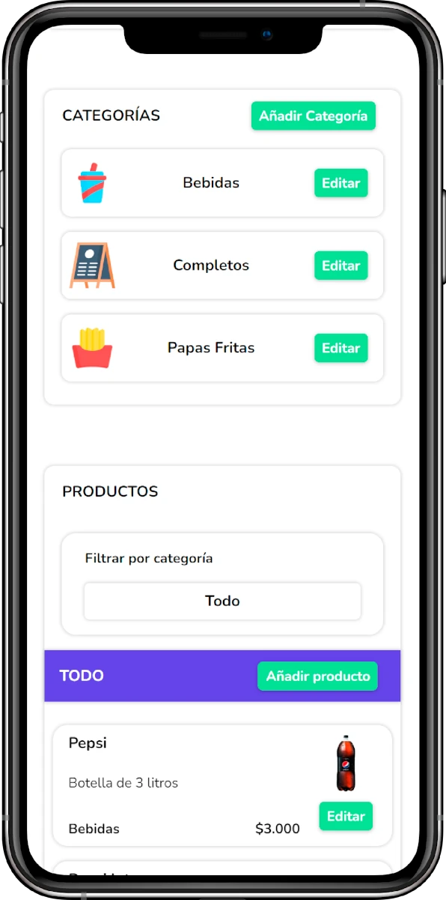
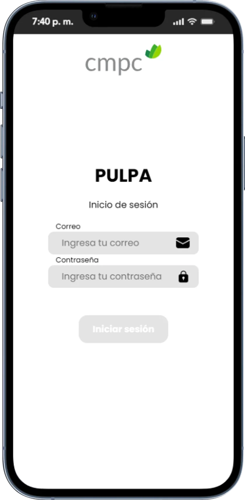
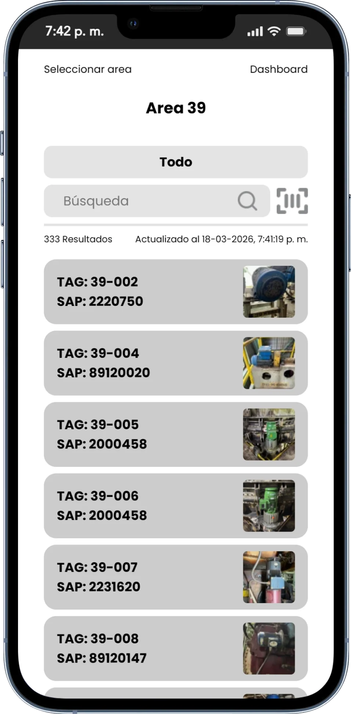

Hey, I'm Esteban👋🏻
Fullstack Developer
I build scalable web applications and high-performance solutions using MERN Stack (MongoDB, Express, React, and Node.js.) Based in Chile, working globally.
Projects.


MenuQR.
Solving the rigidity of paper menus through a Cloud-Native SaaS
platform. Using Node.js, React, and Google Firebase, I built a
system where restaurant owners can update prices and stock
instantly across all digital touchpoints. It features a responsive
PWA interface for customers and a robust management suite for
administrators.
Technologies
- Firebase
- React JS


Pulpa App.
Pulpa App is a specialized mobile-first platform developed for a
client at CMPC (one of the world's largest pulp and paper
companies from Chile) to streamline the monitoring and control of
industrial machinery and motors within their manufacturing plants.
The application addresses the challenge of real-time data
accessibility in the field, replacing manual processes with a
digital ecosystem.
Key Features
- Mobile-First Design: Optimized for field
workers, ensuring high performance and usability on mobile devices
in industrial environments.
- QR Code Integration: Automatically generates unique QR codes for each machine. Workers can scan these tags on-site to instantly access technical specifications and maintenance history.
- Data Portability: Includes a robust reporting feature that exports real-time information to Excel for administrative analysis and auditing.
- Centralized Documentation: Allows users to attach direct links or specific files (manuals, schematics) to each machine entry for quick reference.
Want to see more of my work? Let’s connect!
About_me.
Analyst Programmer student from INACAP. I am dedicated to delivering high-quality software while continuously mastering the latest industry standards and English communication for global environments.
Professional Profile
Currently in my 3rd semester of Programmer Analyst at INACAP, focusing on building scalable web solutions and mastering cloud architecture.
Core Tech Stack
- Frontend: React.js (Vite), JavaScript (ES6+), HTML5/CSS3
- Backend: Node.js, Express
- Database: MongoDB (MERN Stack)
- Security: JWT Authentication
- Mobile: React Native (Initial/Foundational)
Certification Path (In Progress)
GitHub Foundations
AWS Certified Cloud Practitioner
MongoDB Associate Developer